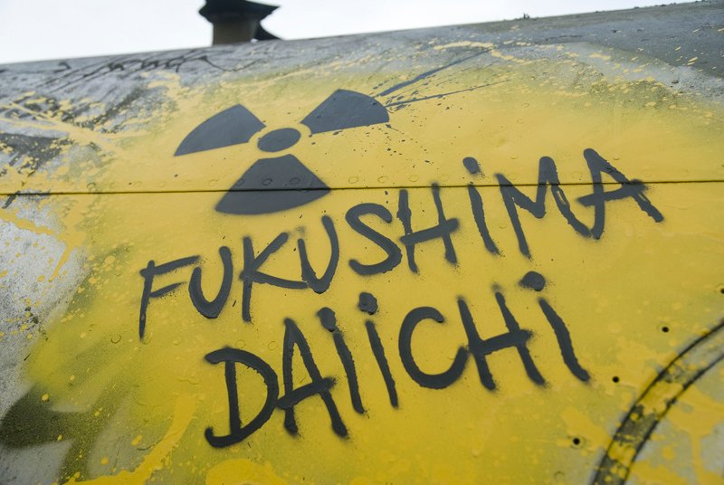

CORRECT!
A plain shut down of the reactors is not enough because even if the reactor is not operating, there is a great amount of accumulated heat (called decay heat) that must be removed. The Fukushima Daiichi reactors had proved their ability to withstand a magnitude 9.0 earthquake but failed when hit by the 15 meter high tsunami. The entire site that was 10 meters above sea level with seawater pumps 4 meter above sea level was flooded. This disabled the back-up generators on site that were being used to operate the heat exchangers for removing the decay heat from within the reactors. The units hence failed to maintain proper reactor cooling and water circulation. The tsunami also drowned the diesel generators, switchgear and batteries, all of which were located in the basements of the turbine buildings. There was a complete station blackout. Failure to remove heat led the reactors to accumulate excess heat and eventually develop a hydrogen bomb-like situation.
The Nuke Quiz #3
Question 4
Even though plants were immediately shut down after the earthquake hit, why did the Fukushima accident occur?
